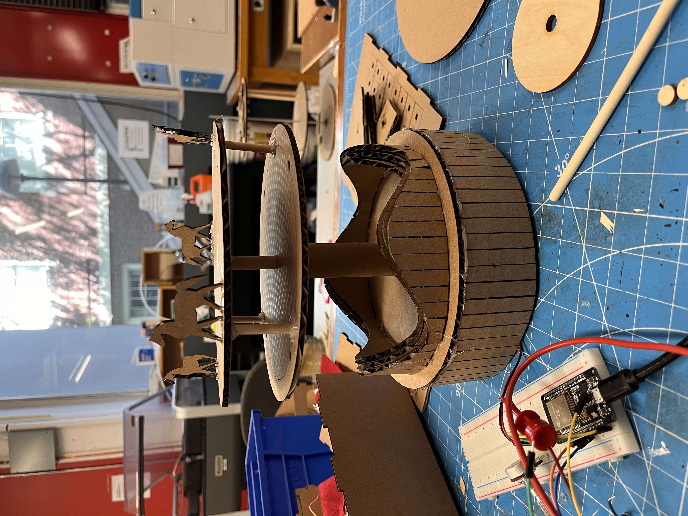
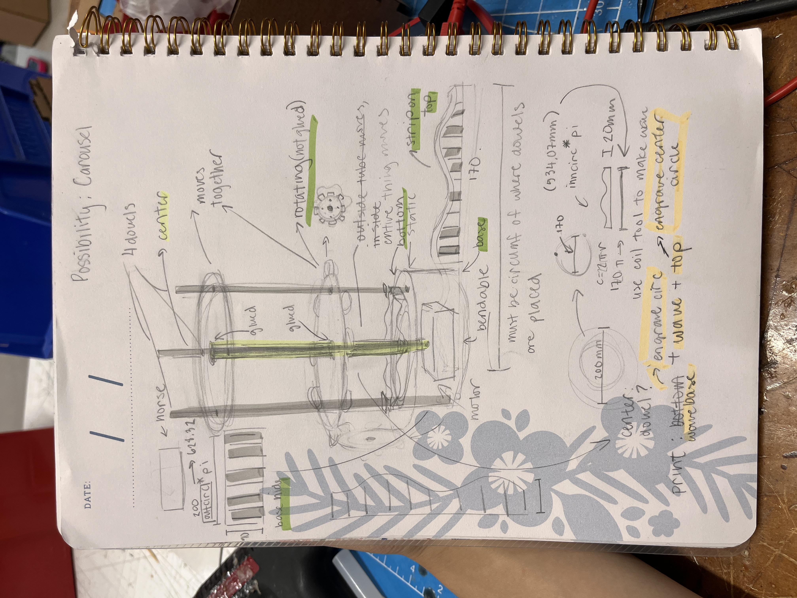

<div class="textcontainer">
<p class="margin"> </p>
<h3>Week 3: Hand Tools and Fabrication</h3>
<h4>Kinetic Sculpture</h4>

<p class = "margin"></p>
I found this week's kinetic sculpture project to be incredibly difficult, my first idea for what I wanted as my sculpture did not make it, so I did have to improvise from there to the project you see now. In the future in my own time I would love to try to improve upon my first idea and make it a reality, but this project has taught me a lot.
<p class = "margin"></p>
<h4>My first iteration</h4>

<img src=".jpg" width="300" height=auto alt="Fixed Size Image" alt="placeholder for you about me image">
<p class = "margin"></p>
This sketch was my initial idea of what I wanted to happen. A non-moving central rod would be able to move in the center which was glued to the top and 2nd top platforms. There would be 4 dowel rods that went through the top and 2nd top platforms that would have the freedom to move up and down, which idealy would follow the circular wave I constructed on the third platform. This should have resulted in a carousel that spun and rods (on which I would put horses) that move up and down. Unfortunately the model printed was very unstable, and the friction between the rods and wave would inhibit any spinning action. Knowing this I attempted to add scotch tape to the wave to try to decrease the friction but eventually found out the wave itself was too steep for the rod to moveup and downwithout stops.
<p class = "margin"></p>
<img src="fusion.jpg" width="300" height=auto alt="Fixed Size Image" alt="placeholder for you about me image">
<h4>Fusion model</h4>
<p class = "margin"></p>
This was my fusion model, I calculated the circumference and height of the waves and utilized the 3d coil selection on fusion to create my desired wave. I also calcultated the desired circumference for the long strip which would add more stability to my project. I chatgpt'd the ideal amount of scores for all waves and the strip to be able to shape them to their corresponding circles.
<p class = "margin"></p>
<h4>Final result</h4>
<img src="IMG_3891.gif" width="300" height=auto alt="Fixed Size Image" alt="placeholder for you about me image">
<p class = "margin"></p>
This is my final result! Overall it was very difficult and I had to improvise quite a bit, but I had a lot of fun making it!
<p class = "margin"></p>
</div>